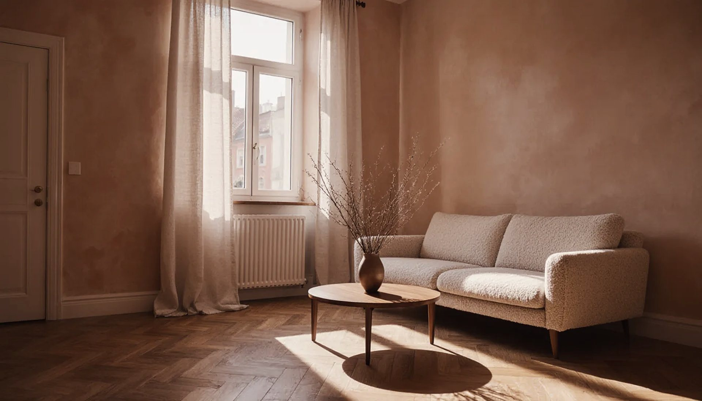
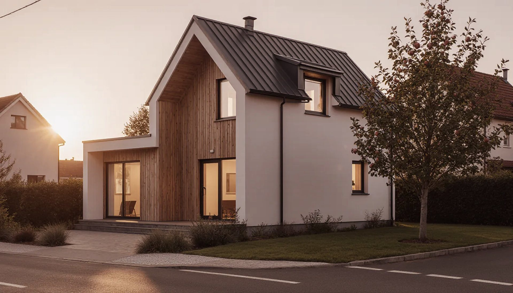

Bc. Miroslav Kučeravý - MK REAL · Malacky · Senica · Skalica
Predávate byt
v Malackách?
Za minútu uvidíte, za koľko sa podobné nehnuteľnosti ponúkajú. Presnú cenu a plán predaja vám pripravím do 24 hodín.
- 01
Cena podľa trhu
Vychádzam z aktuálnych ponúk v okresoch Malacky, Senica a Skalica, nie z pocitu. Ani prestrelená, ani podhodnotená.
- 02
Vy nič neriešite
Fotky, inzercia, obhliadky, zmluvy, kataster aj odovzdanie. Všetko je na mne.
- 03
Bez záväzkov
Odhad a prvé stretnutie sú zadarmo. Rozhodnete sa, až keď budete mať všetky čísla.

Predávate?
Začnime cenou.
Zavolajte, napíšte alebo si spravte odhad online. Ozvem sa do 24 hodín a dohodneme sa, kedy sa prídem pozrieť.